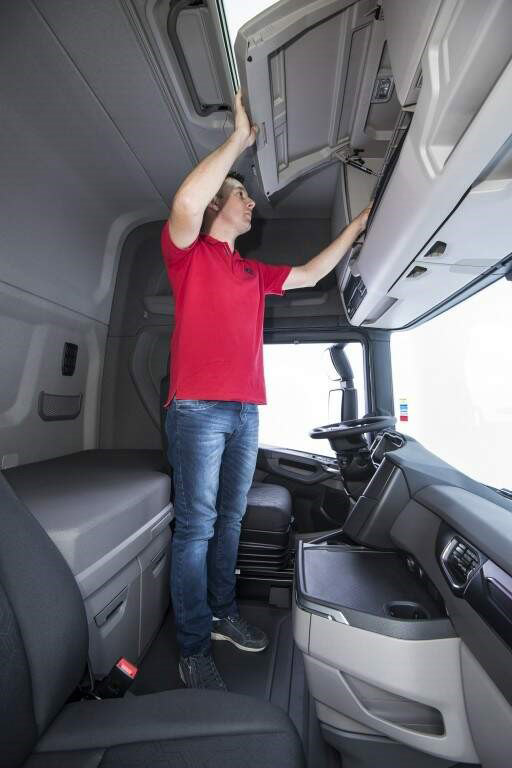

SÉRIE S
A nova série S eleva as apostas no conforto dos motoristas de longa distância. Descubra um interior que é um refúgio de luxo, projetado para uma vida espaçosa. O piso plano, instalações de armazenamento estendidas e uma visão excepcional da posição do motorista, todos adicionam ao seu apelo único.
A série S leva o conceito premium a outro nível. Essa nova geração de caminhões foi desenvolvida pensando no conforto e desempenho do motorista, com espaço interior otimizado, segurança e confiabilidade.
Maior visibilidade
O banco do motorista foi posicionado um pouco mais à esquerda, a janela lateral, rebaixada e o vidro da frente está mais amplo, tudo para garantir maior visibilidade. O painel também foi levemente rebaixado para aumentar a visão do movimento à frente.
PAIXÃO PELO DETALHE
"Estudamos detalhadamente a procedência de todas as peças e itens para nos certificar de que nosso produto tem a qualidade ideal da nova geração de caminhões Scania"
HÅKAN KÅREBY - CHEFE DE APPEARANCE APPROVAL NA SCANIA.
MOTORES PODEROSOS
Nossos poderosos caminhões, eficientes no uso de combustível, são lendários. A série S reforça ainda mais esse conceito. Toda a linha de motores de 13 litros conta com tecnologia SCR, o que reduz o impacto ambiental e o consumo de combustível sem comprometer a potência. O conjunto de engrenagens é mais suave e mais rápido para a linha de 13 litros e o famoso V8.
Motores euro 5
O sistema de motor Euro 5, é um conjunto de normas regulamentadoras mundialmente conhecido, que visa reduzir a poluição causada por veículos movidos com motores a Diesel. Porém, no Brasil o mesmo sistema recebe outro nome, sendo chamado de PROCONVE-P7 (Programa de Controle a Poluição do Ar por Veículos Automotores)
Motor 13 Litros
O fantástico motor de 13 litros oferece uma economia incrível de combustível de 7% a 8% em comparação à geração anterior. Quando comparado à versão XPI da série PGR, a economia de combustível é de 1% a 2% maior.
Nossas unidades de 13 litros e 6 cilindros apresentam níveis de potência de 410, 450, 500 e 540 hp com a tecnologia SCR.
Motor 16 Litros
Nosso lendário motor V8 foi melhorado ainda mais, tornando-o mais leve, potente, robusto e eficiente. Os novos injetores Scania XPI em combinação com o coletor de peça única são duas das principais características que resultam em uma impressionante economia de combustível. Também redesenhamos a câmara de combustão, modificamos os pistões e polimos o virabrequim. Isso resultou em uma economia impressionante de 5%.
O Scania V8 está disponível com potência de 620 hp.
A cabine da série S foi projetada com foco no conforto do motorista de longa distância. O espaço interior é magnifico, o piso é completamente plano, com altura interna de 207 cm, para entrar são quatro degraus ao invés dos três tradicionais.

Casa Sobre Rodas
Com acabamento top de linha e de uma flexibilidade praticamente ilimitada, com opções de dois refrigeradores, centenas de litros de espaço de armazenamento e até telefone. Tem porta objetos lateral externo com abertura de 410 X 570 mm, podendo ser acessado por dentro da cabine.
É possível comportar até 2 camas de 80 cm, que pode ser estendida para 100 cm, com colchões de densidade maior.
As cabines S estão equipadas com isolamento acústico, possibilitando uma melhor noite de sono. Possuem também um moderno sistema de entretenimento, com opções de telas de 5 ou 7 polegadas, comandos no volante, entrada para AUX e USB com 4 auto falante e opção de um central e um subwoofer e ainda preparação e instalação de televisão.
As cabines S no quesito segurança podem ser equipadas com airbags laterais anticapotamento que são integradas no teto da cabine em uma técnica nunca usada antes. Junto com o uso do cinto de segurança, a cortina de airbag se torna crucial na prevenção de um dos acidentes mais comuns, com graves consequências: O motorista ser atingido dentro da cabine por partes interiores ou ficar preso por baixo.